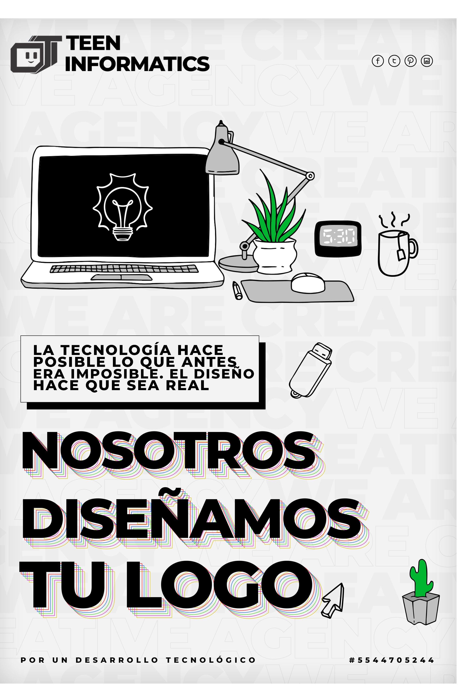

La importancia de vectorizar tu logo en la actualidad la calidad llama mucho la atención. Es decir, los vectores nos ayudan a que hacer que tu marca tenga éxito. Ya que los vectores a diferencia de los pixeles, al cambiar de tamaño no modifica la calidad de este. Por tanto, los tamaños a maxima y minima escala no se verán afectados. Existen medios de corte e impresión que requieren que los diseños sean vectorizados. Y es por ello que debemos pensar a futuro en caso de requerir estos servicios.
Si el logo de tu empresa no está vectorizado y necesitas hacerlo porque tiene una mala calidad, debes recurrir a especialistas que hagan un buen trabajo por un precio razonable y ajustado. Teen informatics esta para ayudarte y ofrecerte un buen servicio, contamos con diseñadores gráficos que trabajan diariamente todos los aspectos relacionados con la imagen corporativa y el diseño, ajuste o modificación de logotipos.
☛ El principal factor es que loa Logos vectorizados no pierden calidad. Al modificar el tamaño
del diseño este no se pixele.
☛ Las imágenes vectoriales pesan menos bits que los otros tipos de imágenes, por lo que
necesitan menos espacio de almacenaje siendo esto muy valorado para uso web.
☛ El proceso de creación es muy simple. También se pueden modificar en un futuro de forma muy
fácil cuando entreguemos el proyecto en .Ai y .Cdr.
Puede dirigirse a la pasteña "contacto" y dejarnos un comentatario o puede mandarnos un mensaje a travez de whatsapp o envianos un mensaje por correo a: teeninformaticcs@gmail.com.
Uno de nuestros diseñadores gráficos confirmará inmediatamente y empezará a trabajar en su solicitud. Le pediremos su numero de teléfono, correo electronico y su modelo (logo mala calidad, idea en una hoja de papel, etc).
☛ Vectorización de los contornos: todos los detalles del logo se reproducen.
☛ Reproducción de los colores: Nosotros coloreamos el logotipo basado en los colores originales.
☛ Vectorización de los efectos: Desvanecimientos, sombras y reflejos están perfectamente
reproducidos.
☛ Vectorización de la tipografía: Los textos son vectorizados, respetando las fuentes
originales.
Para estar seguro de su compromiso a la hora de pagar completamente el servicio, se cobrara un
anticipo para que comencemos a desarrollar su diseño. Debera pagar por tranferencia un 50% del
costo original.
El costo de la vectorización es de $100.00 MXN. Se le mandara por mensaje
el numero de la cuenta a la que se depositara el costo, y ya finalizado se le mostrara al
cliente el diseño, entonces depositara el resto del pago y el diseño sera enviado por correo
electronico junto con los formatos editables para CorelDraw e Illustrator.
Una vez
recibido, el cliente consta de 2 oportunidades para hacer cambios y modificaciones a su vector o
logo. pasando las 2 oportunidades, se cobrara $50.00 MXN extras por cada modificación.
Podemos concluir que la importancia de vectorizar tu logo es de suma importancia.
Tener un logotipo vectorizado nos da muchas facilidades al momento de querer añadirlo a
diferentes sitios o metodos de impresion.
Por ejemplo en los ciertos procesos como la serigrafía necesitamos vectorizar para poder
crear nuestros negativos por ejemplo.
La vectorización no solo nos sirve para que se vea bonito si no para agilizar procesos a
futuro.
De igual forma la vectorización se encarga de que nuestros archivos nunca pierdan su
calidad por muy pequeña o grande que sea nuestra impresion.
Muchas veces no nos damos cuenta pero por ejemplo los vectores son también utilizados
dentro de películas o videojuegos.
Por eso cada que ponemos nuestra consola o nuestro juego en la pc por mas grande que
este la pantalla la calidad no se ve afectada en juegos más recientes.
Entonces podemos concluir que, la vectorización no solo nos sirve para que se vea bonito
nuestro logo.
Si no mas bien es un proceso que nos facilita futuros cambios o adaptaciones de nuestro
logotipo.
Es por ello que decidir por un buen logotipo, sus colores y demás harán que nuestra
empresa, negocio etc, tenga un diferenciador de marca.
Al mismo tiempo que crea un valor en clientes o futuros clientes para que puedan
distinguirlo desde una simple pluma hasta un gran cartel.